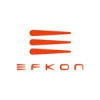
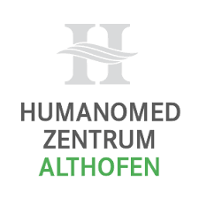

Conseil d’entreprise
Mag. Dr. Sabine Stolz, MSc
Ne laissez pas filer un temps précieux !
« Qui connaît son but trouve son chemin ! »
Vous avez une vision du succès de votre entreprise ? Seul le chemin pour y parvenir reste encore à tracer ?
La gestion de situations managériales complexes, les stratégies de contrôle de gestion, les défis internationaux, la mise en œuvre de solutions informatiques conviviales et l’élaboration de plans rentables pour accroître la productivité de votre entreprise sont mes domaines de spécialité.

- 2005Conseillère d’entreprise indépendante depuis
- 19Références issues de l’économie et de la formation
- 5Domaines d’intervention
Domaines d’intervention
Un accompagnement adapté, de la stratégie à la mise en œuvre.
- Solutions informatiques innovantes et sur mesure
- Financements sur mesure
- Conseil à court et à long terme
- Mise en place et formation
- Technologie, management et support
Méthode de travail
Claire, personnalisée et orientée vers un impact durable.
J’accompagne les entreprises face à des questions économiques complexes, en alliant solide compétence financière, expérience internationale et solutions informatiques pragmatiques.
Au cœur de ma démarche : des concepts viables, des stratégies réalisables et un conseil qui garde à l’esprit aussi bien les défis à court terme que le développement à long terme de votre entreprise.
Références
Une sélection de collaborations passées








Contact